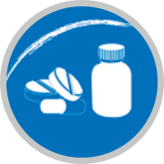

Menu
POSCONSUMO
1. Escoge cual de estos residuos hace parte del Programa Posconsumo "Planes de gestión postconsumo":

¡Perdiste!
Los Celulares hacen parte del programa Posconsumo "Programas Voluntarios"
Comparte tu puntaje en las redes sociales
Cerrar
Posconsumo
Gestión de Residuos
Inicio
Aprende
Infórmate
Ubícate
Contacto
Acerca de
Salir